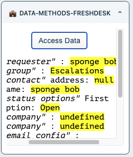
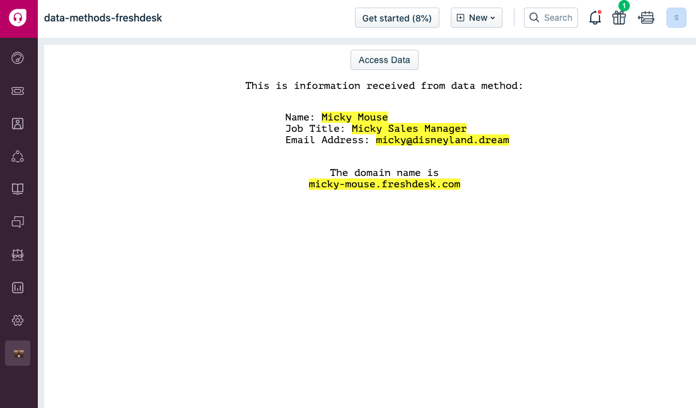

You will explore this feature by writing some simple code to capture a few events like user clicks in app placeholders and explore writing code yourself
Get the sample code ready
git clone https://github.com/freshworks-developers/data-methods-freshdesk.git
Alternatively,
> fdk runlocalhost:10001?dev=true at every page. You should see an app icon available to activate the app.Note: The Data Methods can be invoked specific to the placeholders. See documentation for specific details.
Data Methods allow your app to access information on a given Freshdesk page. In this tutorial you'll learn how to consume data methods in your freshworks apps.
client.data.get("<argument>") returns a promise where your callback would have access to data in the page which user is currently viewing.
Let's see this in action.
❯ fdk run
Starting local testing server at http://*:10001/
Append 'dev=true' to your Freshdesk account URL to start testing
e.g. https://domain.freshdesk.com/a/tickets/1?dev=true
Quit the server with Control-C.
Freshworks CLI serves your app to the browser on port :10001. In the Freshdesk account, append the URL with ?dev=true to find apps running on the global sidebar at CTI app location.
Data Methods return the data that the app needs based on the app placeholders. Mostly giving the contextual information pertaining to the current page. However, the following arguments can be passed to the Data method that would return the payload given in any placeholder.
The following is how you can consume it in your app
client.data
.get('loggedInUser')
.then(function renderUserBioData(payload) {
var {
loggedInUser: {
contact: { name: name, job_title: job, email: email }
}
} = payload;
displayArea.insertAdjacentHTML(
'afterbegin',
`<p>This is information received from data method:</p>
<ul>
<li>Name: <mark>${name}</mark></li>
<li>Job Title: <mark> ${job} </mark></li>
<li>Email Address: <mark> ${email} </mark></li>
</ul>
`
);
})
.catch(console.error);
Let's discuss this in detail.
client is an object that is brought into scope for the developer by the platform. See Line 6 in app/scripts/fullpage.js is attaching it to the global scope of the window.client.data.get() is a method that can interface with Freshdesk (via platform) and get the information for the app to consume.loggedInUser is passed to the get() method. It returns a promisealong with a payload. In this case, a payload containing the information of loggedInUser.renderUserBioData(payload){..}The renderUserBioData(payload){..}function does two things. It is assigning the payload data to name, job and email variables. Also, rendering the same name, job and email information to the DOM. [See object destructuring if you find the assignment confusing.]Note: Always refer to the documentation for latest payload structure and attribute definitions.
client.data
.get('domainName')
.then(function whatsDomain({ domainName }) {
displayArea.insertAdjacentHTML('afterend', `<br> The domain name is <mark>${domainName}</mark>`);
})
.catch(console.error);
This snippet simply fetches the host Freshdesk's domain name for the app.
See the current state of source code on global-args branch of sample code.
Each page has a couple of placeholders for the app. Just like Global Arguments can be passed to the data method in any page or app placeholder. However, data is provisioned (via data methods) to the app based on the page app is placed in.
For this tutorial, let's look at Ticket details page,
Open app/scripts/sidebar.js and try adding some methods consuming different valid arguments ticket details page.
Within the
renderSidebar(){..},
// ticket
client.data
.get('ticket')
.then(function getDetails({ ticket: { description_text: desc, priority: priority } }) {
space.insertAdjacentHTML(
'afterbegin',
`<li><i>"ticket"</i> priority: <mark>${priority}</mark> : desc: <mark>${desc}</mark></li>`
);
})
.catch(console.error);
//contact
client.data
.get('contact')
.then(function getDetails({ contact: { address: address, name: name } }) {
space.insertAdjacentHTML(
'afterbegin',
`<li><i>"contact"</i> address: <mark>${address}</mark> name: <mark>${name}</mark></li>`
);
})
.catch(console.error);
// email_config
client.data
.get('email_config')
.then(function getDetails(payload) {
let supportEmail = payload.email_config[0].replyEmail;
space.insertAdjacentHTML('afterbegin', `<li><i>"email_config"</i> : <mark>${supportEmail}<mark></li>`);
})
.catch(console.error);
//requester
client.data
.get('requester')
.then(function getDetails(payload) {
let name = payload.requester.name;
space.insertAdjacentHTML('afterbegin', `<li><i>"requester"</i> : <mark>${name}<mark></li>`);
})
.catch(console.error);
//requester
client.data
.get('company')
.then(function getDetails(payload) {
let name = payload.company.name;
space.insertAdjacentHTML('afterbegin', `<li><i>"company"</i> : <mark>${name}<mark></li>`);
})
.catch(console.error);
//requester
client.data
.get('group')
.then(function getDetails(payload) {
let name = payload.group.name;
space.insertAdjacentHTML('afterbegin', `<li><i>"group"</i> : <mark>${name}<mark></li>`);
})
.catch(console.error);
//requester
client.data
.get('company')
.then(function getDetails(payload) {
let name = payload.company.name;
space.insertAdjacentHTML('afterbegin', `<li><i>"company"</i> : <mark>${name}<mark></li>`);
})
.catch(console.error);
//status_options
client.data
.get('status_options')
.then(function getDetails(payload) {
let opt = payload.status_options[0];
space.insertAdjacentHTML('afterbegin', `<li><i>"status options"</i> First option: <mark>${opt}<mark></li>`);
})
.catch(console.error);
//time_entry
client.data
.get('time_entry')
.then(function getDetails(payload) {
let isTimerRunning = payload.time_entry.time_entries[0].time_spent;
space.insertAdjacentHTML('afterbegin', `<li><i>"time entry"</i> First option: <mark>${isTimerRunning}<mark></li>`);
})
.catch(console.error);
The result would be information rendered to the DOM informing of a list in the ticket sidebar returned from different data methods.
ticket_sidebar
full_page_app
At this point you have consumed data methods from Global Arguments and Ticket Details Page specific arguments.
Take some time to go through the final source code at this moment.
Bunch of other locations where Data Methods can be accessed are
ticket, contact, email_config, requester, company, group, <fieldName>_options, time_entry<fieldName>_optionsemail_cofig, <fieldName>_optionscontact, companyWhy not try writing code yourself for requesterpage.js and contactpage.js?
Above steps will give you more confidence using the Data Methods.
Congratulations! 💐
You have come so far walking throughout the tutorial.